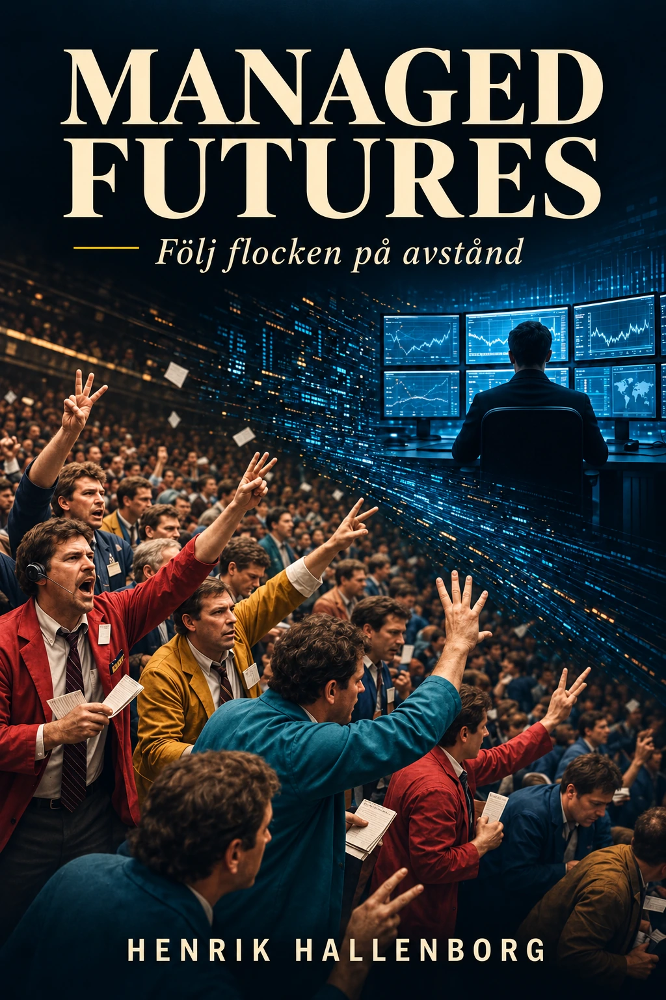

Digital utgåva
Ladda ned boken.
Den digitala utgåvan levereras som PDF och kan läsas på dator, surfplatta eller telefon.
- Klicka på nedladdningsknappen.
- PDF-filen öppnas eller sparas i webbläsarens nedladdningsmapp.
- Öppna filen i valfri PDF-läsare.
- Du får gärna dela boken med andra som är intresserade av Managed Futures.